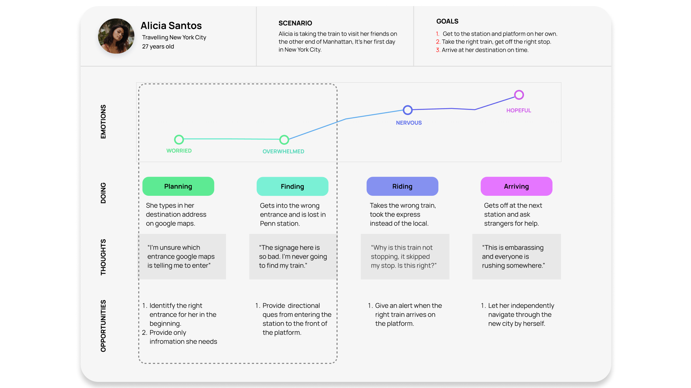
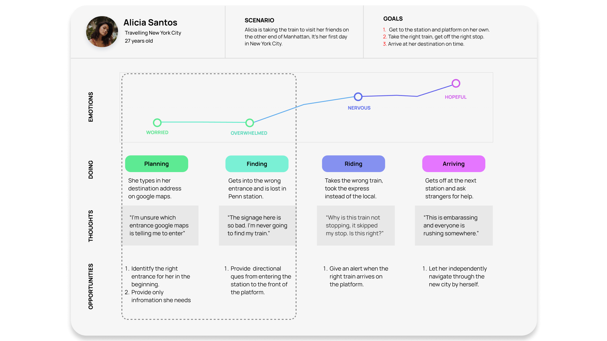

Pathfinder
Designing an AR Commuter Guide on Google Lens for AR glass devices.
My Role
Research, Interaction Design
Duration
14 Weeks
Advisors
Diamond Ho
Prompt
How might we make subway commutes less confusing and more efficient for new and local commuters in the city.
Solution
Pathfinder, an augmented reality commuter guide as a new feature on Google Lens, that works as an extention on all AR glass devices. This example shows how it might work for a use case on the subway. AR glass devices works better then a AR mobile experience for safety reasons, to let users keep an eye on the street when walking.
 

Next steps
1. Test UI layout for different languages.
2. Design for use cases when travelling with a friend or group on the subway.
3. Design for different types of commuters, such as bikers on the street.